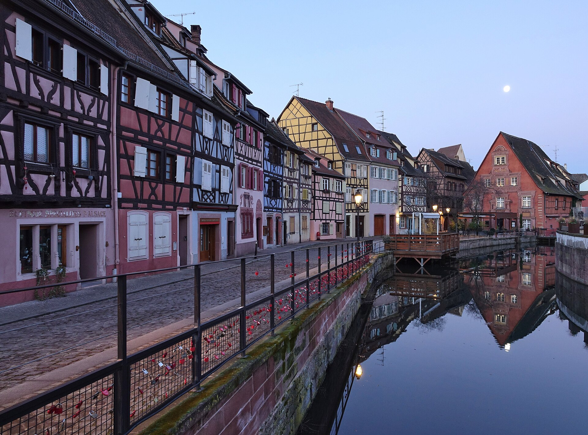
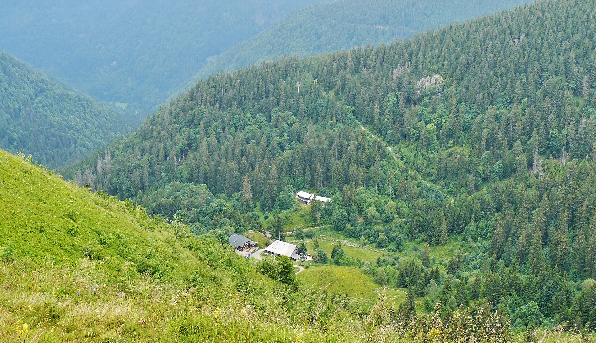
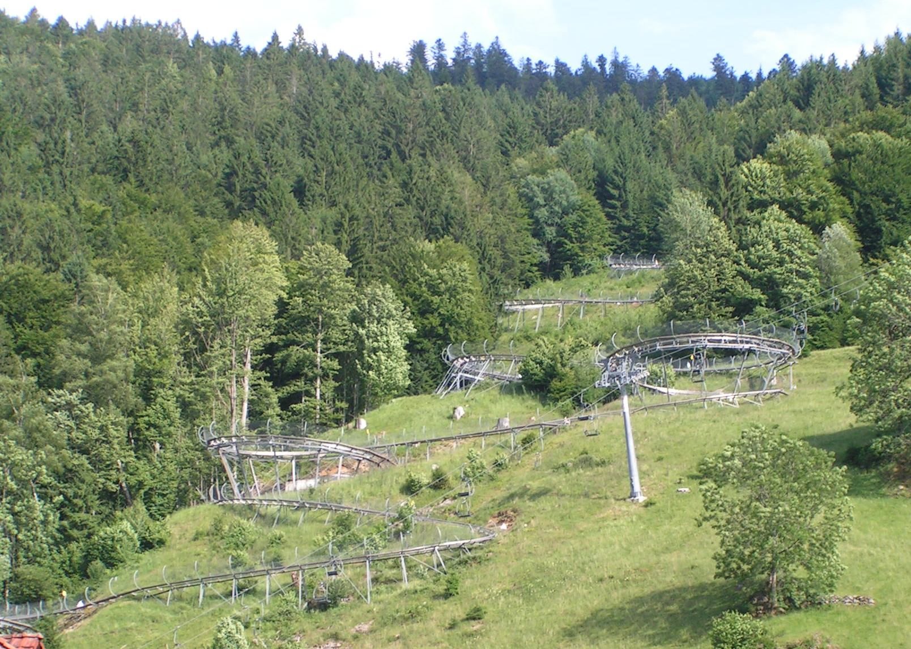
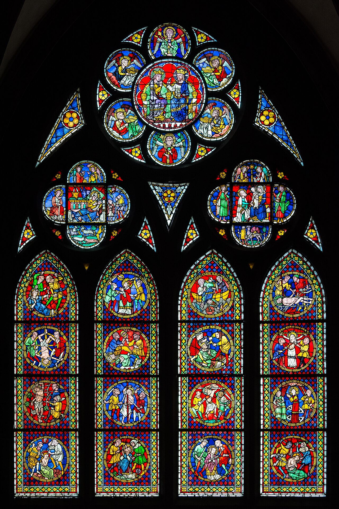
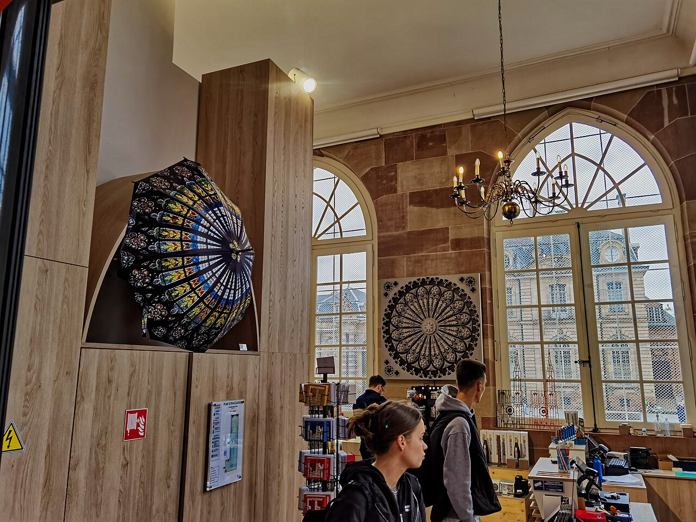
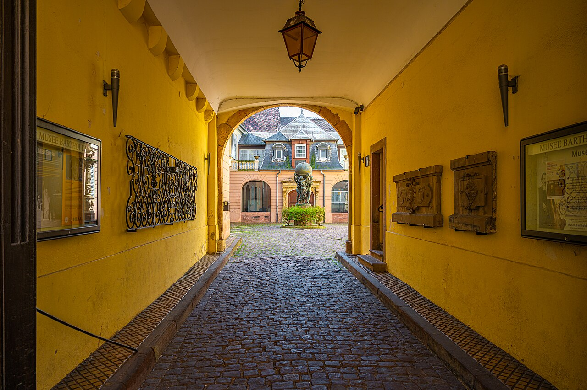
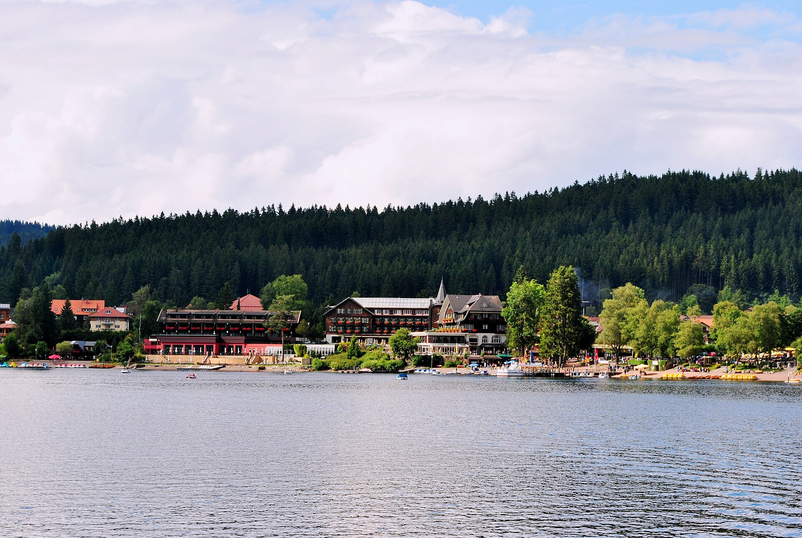

בסיס ראשון
טיטיזה והיער השחור
התחלה רכה: אגם, טיילת, רכבל, מים חמים ותצפיות — בלי להעמיס.
אגםמשפחהקצב רגוע
התחלה רכה: אגם, טיילת, רכבל, מים חמים ותצפיות — בלי להעמיס.
הלינה השנייה קרובה לפארקים, כדי לחסוך נסיעות בבוקר ולסיים את הטיול בשיא.

Colmar → Riquewihr/Ribeauvillé → Strasbourg — יום צבעוני נפרד, לא בסיס לינה.
מסלול אינטואיטיבי: מתחילים רגוע בטיטיזה, מוסיפים יום אלזס יפהפה, עוברים ל־Rust ומסיימים בשני פארקים.
נחיתה, רכבים ונסיעה לבסיס הראשון.

אגם, טיילת, מלון וקצב משפחתי.
קולמר, כפר יין ושטרסבורג.
קרוב לפארקים ול־Rulantica.
נסיעה לציריך וטיסה בערב.
כל מקום מקבל הסבר קצר וקישור Google Maps יפה וברור, כדי שהמשפחה תבין איפה אנחנו ומה מיוחד שם.
כאן נוחתים, לוקחים רכבים ומתחילים את הנסיעה ליער השחור. זו נקודת התחלה נוחה כי היא קרובה יחסית לדרום גרמניה.
פתח במפהאגם יפה בלב היער השחור, טיילת נעימה, בתי קפה וגישה טובה לאטרקציות. זה הבסיס הרגוע של תחילת הטיול.
פתח במפהפארק מים ובריכות ליד טיטיזה. מתאים במיוחד ליום גשם או ליום שבו רוצים פעילות קלה וכיפית בלי נסיעות ארוכות.
פתח במפה
האזור הגבוה של היער השחור. מגיעים בשביל נוף, אוויר הרים ורכבל/תצפית — בלי להפוך את זה למסלול הליכה קשה.
פתח במפה
רכבת הרים הררית שמתאימה למי שרוצה אקשן. מי שלא רוצה — יכול ליהנות מקפה ונוף באזור.
פתח במפהעיר צבעונית באלזס עם תעלות, בתים מצוירים ואזור Little Venice. זה המקום הכי “גלויה” ביום אלזס.
פתח במפהכפר אלזסי קטן ויפה עם בתים צבעוניים, סמטאות ותחושה של אגדה. בוחרים כפר אחד כדי לשמור על קצב רגוע.
פתח במפהעיר יפה על הגבול בין צרפת לגרמניה. האזור של Petite France מושלם להליכה קצרה, תמונות וארוחת ערב.
פתח במפהכאן עוברים לבסיס השני כדי להיות קרובים לפארק הגדול. המטרה: פחות נסיעות בבוקר ויותר זמן כיף.
פתח במפהבמקום מוזיאונים ונופים בלבד: מקומות שבהם הילדים מטפסים, קופצים, גולשים, משחקים ורצים — עם מבוגרים שיכולים לשבת ליד קפה כשצריך.
פארק חבלים/טיפוס ממש באזור טיטיזה: מסלולים בין העצים, גשרים, אומגות ואתגר פיזי שהילדים באמת עושים.
אופציה פעילה ליד פלדברג: אזור מקורה עם טרמפולינות/טיפוס ופעילויות שמתאימות במיוחד כשמזג האוויר לא מושלם.
מגלשת הרים ארוכה ומהירה — בדיוק מסוג הדברים שילדים זוכרים. מי שלא עולה יכול להישאר לקפה ונוף.
פארק משפחתי עם מתקנים, גשר תלוי, חיות ואווירת טבע — הרבה יותר “לעשות” מאשר מוזיאון, ועדיין לא ענק כמו Europa-Park.
שילוב טוב לילדים: פארק חיות עם מתקנים קטנים ואזורי משחק. פחות “להסתכל על נוף”, יותר לזוז ולעבור בין דברים.
פארק קטן וקל ליד אזור Rust, טוב במיוחד לילדים צעירים או ליום שלא רוצים בו עוד פארק ענק אחרי Europa-Park.
כמה רעיונות לקניות לפי מצב הרוח: מרכזי עיר נעימים, בוטיקים ומזכרות, חנויות יופי, אאוטלט למותגים וקניות פרקטיות ליד הלינה.

אפשרות טובה לקניות עירוניות בלי להיכנס לעיר ענקית: רחובות מרכזיים, בתי קפה, חנויות אופנה ומוצרים יומיומיים.

הנקודה הכי ברורה למי שרוצה Sephora וקניות צרפתיות. עדיף לתכנן כחלון קניות מוגדר ולא כיום הליכה אינסופי.

לא “יום קניות” רשמי, אלא קניות קטנות תוך כדי יום אלזס: חנויות עיצוב, מתוקים, מזכרות ותמונות בין הרחובות הצבעוניים.
אופציה למותגים ואאוטלט, אבל רק אם ממש רוצים. זה לא “על הדרך” באופן מושלם, ולכן צריך להישאר בחירה מודעת.

קניות קטנות בלי נסיעה: שעוני קוקייה, שוקולד, גלידה, צעצועים ומזכרות סביב הטיילת. טוב לילדים כי זה קצר וברור.
לפעמים הקנייה הכי שימושית היא לא אאוטלט: מים, חטיפים, תרופות, מגבונים, ציוד לבריכה ודברים שחסרים בדירה/מלון.
הטיול בנוי סביב שני בסיסי לינה: התחלה רגועה בטיטיזה, ואז מעבר ל־Rust כדי להיות קרובים לפארקים.
הבסיס הראשון מתאים לפתיחה רכה: אגם, טבע, Badeparadies, Feldberg ויום אלזס שיוצא וחוזר מאותו בסיס.
הבסיס השני מיועד לסוף הטיול: קרוב ל־Europa-Park ול־Rulantica, פחות נסיעות בבוקר ויותר זמן פארקים.
בגלל שזה טיול משפחתי, הלינה צריכה להפחית עייפות ולא רק להיות “יפה”.
יום הגעה רגוע, בלי אטרקציות.
היכרות רגועה עם האזור.
פארק מים / בריכות ליד טיטיזה.
יום נוף בלי מסלול קשה.
חבלים, מגלשת הרים או פארק פעילות — לפי מזג אוויר ואנרגיה.
Titisee → Colmar → Riquewihr/Ribeauvillé → Strasbourg → Titisee
אם יש כוח — עוד אטרקציה לילדים; אם לא — יום רגוע ליד טיטיזה.
יום מעבר בלי פארק, עם אופציית אאוטלט אם יש אנרגיה.
יום פארק מלא — שיא מספר 1.
יום מים — שיא מספר 2.
שטרסבורג לקניות, Sephora, ארוחה קלה ואריזה.
יום לוגיסטי — בלי אטרקציות.
הסבר קצר לילדים, בלי מילים מסובכות — ועוד משחק קטן כדי להכיר את המקומות לפני הטיול.
אגם גדול ויפה. אפשר לטייל ליד המים, לאכול גלידה, לצלם תמונות ואולי לעשות שייט.
יום מים עם בריכות ומגלשות. זה יום של בגדי ים, צחוקים והרבה אנרגיה.
אם מזג האוויר לא טוב לנוף — אפשר לקפוץ, לטפס ולהוציא אנרגיה במקום מקורה.
מגלשת הרים על ההר. מי שאוהב מהירות ואקשן כנראה יחייך הרבה.
פארק חבלים בין עצים: מטפסים, עוברים גשרים ואומגות ומרגישים כמו הרפתקנים.
שילוב של חיות, מתקנים ואזורי משחק — לא רק להסתכל, אלא גם לזוז ולעשות.
עיר שנראית כמו ציור: בתים צבעוניים, תעלות קטנות וגשרים. מקום טוב למשחק “מצא את הבית הכי יפה”.
כפר קטן עם סמטאות ובתים מיוחדים. מרגיש קצת כמו סיפור אגדה.
פארק ענק עם מתקנים, רכבות הרים ומופעים. כל אחד יכול לבחור את רמת האומץ שלו.
פארק מים גדול ליד Europa-Park. יום של מגלשות, בריכת גלים ומנוחה אחרי יום פארק.
לחצו על תשובה. בכל שאלה תקבלו רמז על מקום בטיול.
מתחילים? נסו לנחש לפי הרמז.
תמונות יעד מדויקות יותר, עם מקום להחליף בהמשך לתמונות רשמיות או משפחתיות.
עכשיו זה חלק חי של הברושור: עוברים עם העכבר או לוחצים על מקום — התמונה משתנה. לחיצה פותחת 5 עובדות אקראיות, ובכל לחיצה נוספת מקבלים שילוב חדש.